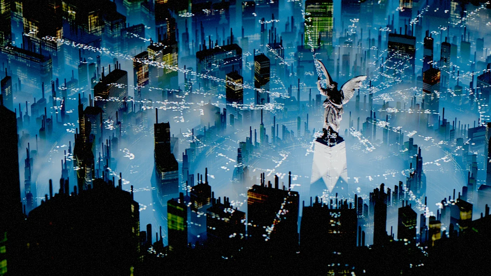
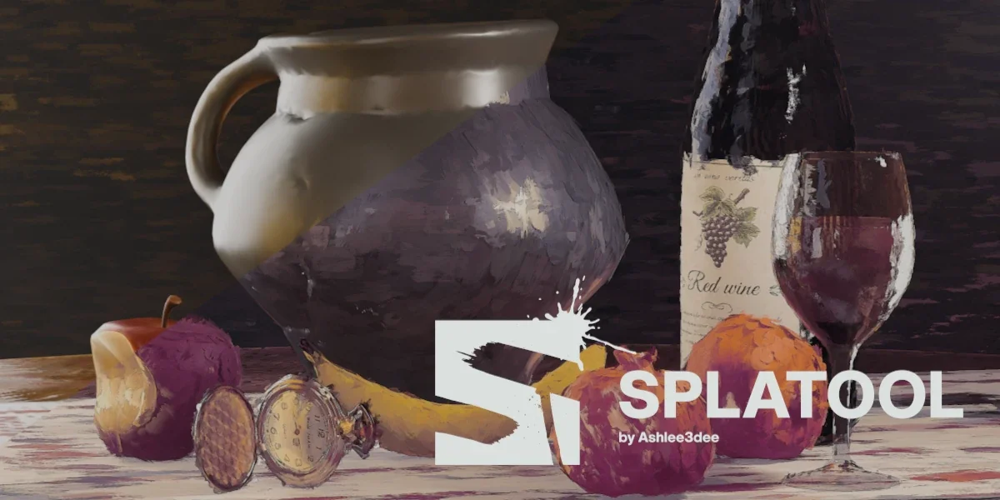
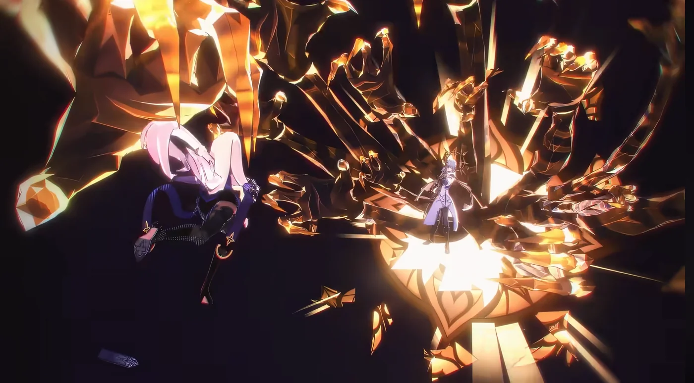
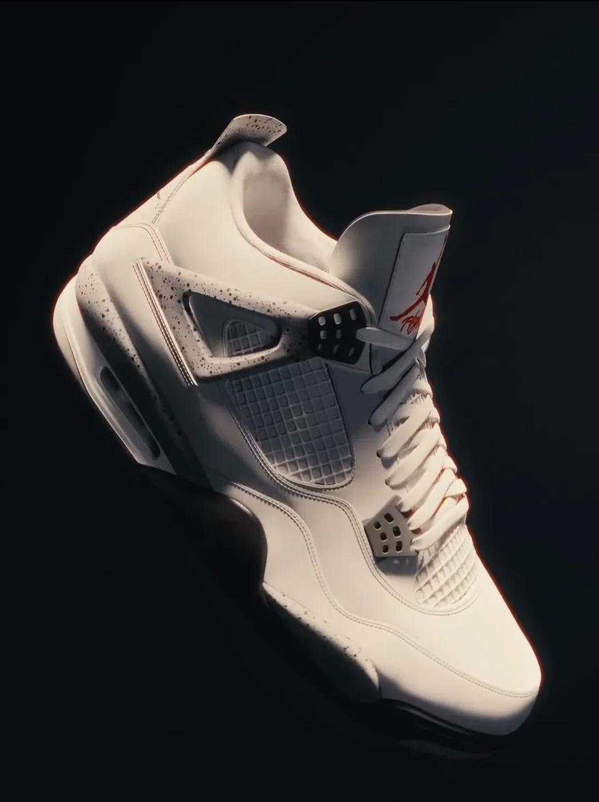
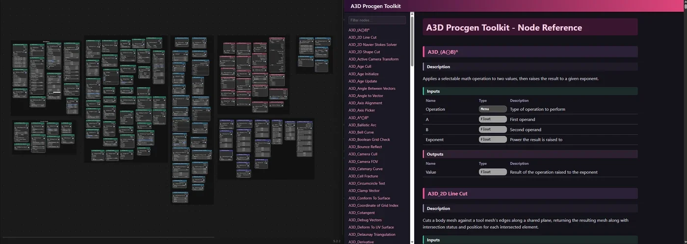
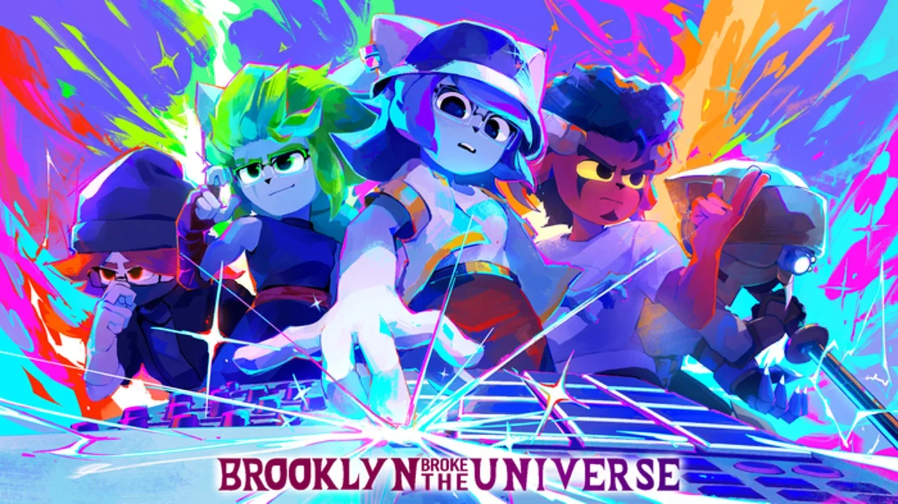

City of Tomorrow
Concept art
Ashlee Alaniz / Demo reels
01 / Work index

Concept art

Tool development

Technical direction

Product renders

Tool development
Concept art
Product renders

Technical direction
As a polygon contracts, collapsing edges and splitting boundaries change which vertices are connected. My event-driven wavefront advances to each of these transitions and rebuilds the boundary while preserving the traces that form the straight skeleton. Scale-aware tolerances account for floating-point precision when events coincide.
Cloth stiffness can vary with timestep and iteration count, making material behavior difficult to tune. XPBD addresses this by scaling compliance with the inverse squared substep duration and accumulating constraint multipliers across solver iterations. Expressing that solve in Geometry Nodes requires consistent state across edge constraints, vertex corrections, and velocity updates. Moving contact adds a temporal problem: collider geometry must be interpolated across substeps so collision projections follow its motion through the frame.
Geometry attributes hold the fluid’s state; grid-neighbor sampling supplies the spatial relationships needed to evolve it. Each update computes velocity divergence, iterates a pressure solve, and feeds the pressure gradient back into velocity. Keeping those stages in sync lets the moving sphere stir a coherent flow while the pressure solve reduces divergence.
02 / About
I’m a technical artist and 3D generalist working in lighting, shading, environment art, and tool development.
I’m self-taught, with a background in additive manufacturing and software engineering. My practice includes procedural workflows and artist tools.
I’ve worked on projects for Warner Brothers/DC, Honkai: Star Rail, and Nike.
Blender / Geometry Nodes / Substance Designer / Unity Shader Graph & VFX Graph / Unreal Blueprints